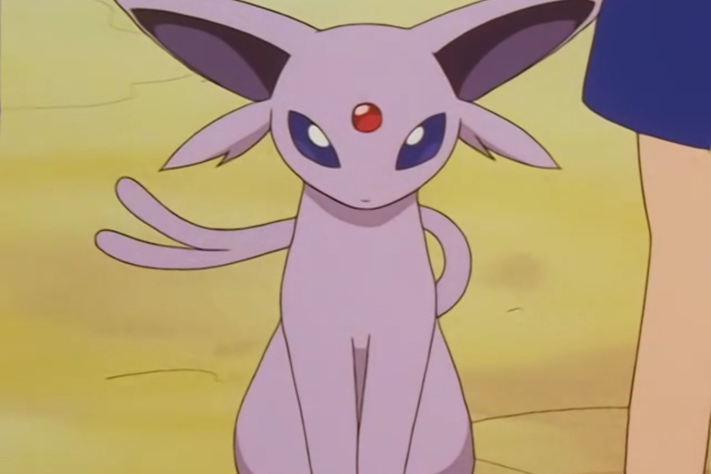
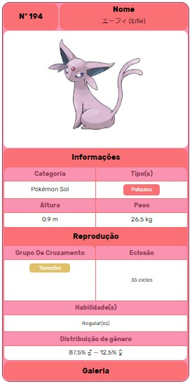

Espeon, o psiquico
Espeon (em Japonês: エーフィ Eifie) é um Pokémon tipo Psiquico. Ela é uma das evoluções do Eevee Espeon tem pele lilás, orelhas grandes, com interior roxo ou azul e possue longos tufos de pêlo abaixo deles, uma gema vermelha em sua testa e um par de olhos pupiless com íris brancas e roxa escleras. Espeon tem quatro pernas finas e pequenas patas. Sua cauda delgado, que é bifurcada em dois no final, ajuda a prever futuros possíveis. Sua aparência felina e espumantes gema vermelha têm levado alguns a confundi-lo como um parente de Persian. No entanto, esta jóia apenas aumenta os seus poderes psíquicos.
Diferenças de Genero
Não ha diferenças de genero no Espeon
Habilidades Especiais
Espeon desenvolveu poderes psíquicos devido a uma combinação de grande lealdade com seu treinador e da luz solar, com várias assinaturas habilidades especiais atribuíveis à sua fina, pele sensível. Esta pele muito fina, que tem a aparência de veludo, é tão sensível que, como correntes de ar passar por ele, Espeon é capaz de sentir as coisas, tais como mudanças de minutos no ar, e prever mudanças no clima ou o adversário do próximo mover. Como Pokémon mais totalmente evoluído, Espeon pode aprender Hyper Beam e Giga Impact. Com a luz solar, ele é capaz de aprender a Morning Sun
